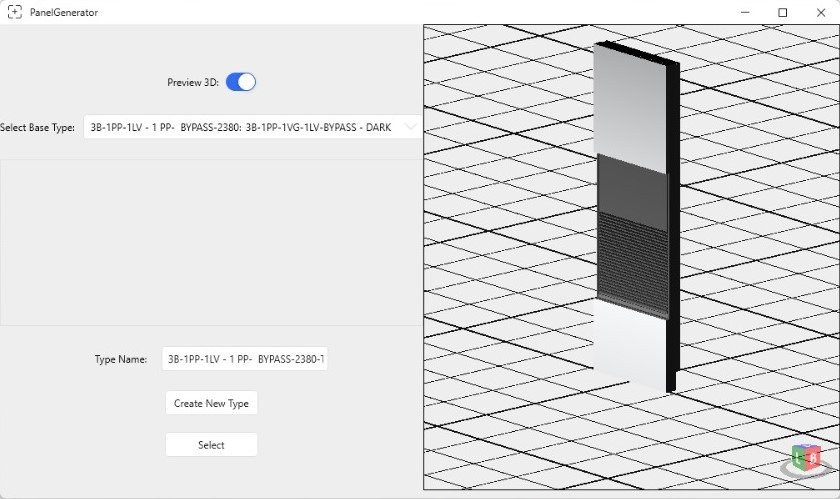
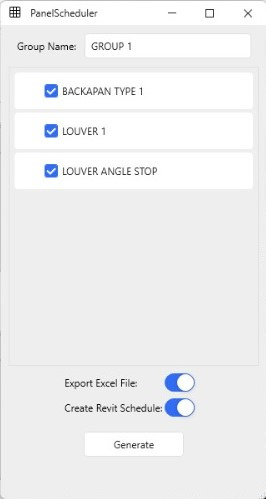
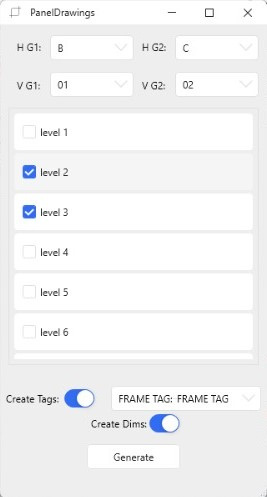
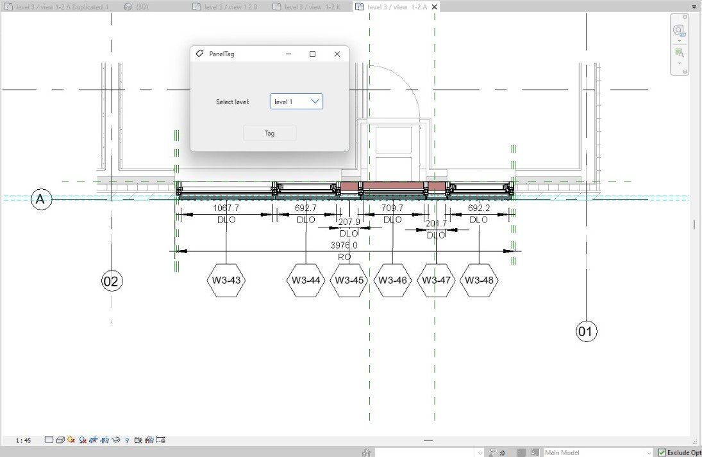

← All work
Parametric · 4 tools
Curtain Panel Suite
Geometry that builds itself.
- C#
- Revit API
- adaptive families
The problem
Documenting a complex facade panel by panel, with a schedule, a view and dimensions for every type, is slow and easy to get wrong.
What it does
One tool chain taking a curtain wall facade from parametric definition through to fully annotated documentation.
Panel Generator creates and edits curtain panels across the facade. Panel Scheduler builds and exports panel schedules. Panel Drawings generates a dedicated view for every panel type. Panel Tagger tags and dimensions the whole set automatically.
See it
Screenshots & demos



